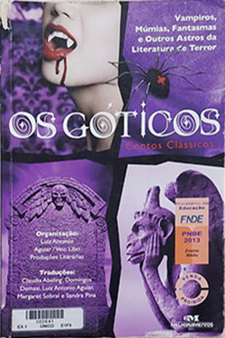

Góticos: Contos Clássicos. - Luiz Antonio Aguiar
Sobre o livro:
Drácula, Frankenstein, Mr. Hyde - o monstro... Castelos com passagens secretas, vãos escuros, masmorra... E o terror. Aquele que nos obriga a dar uma espiada para trás na hora em que o vampiro ataca na história que lemos. Na hora em que a assombração aparece nas linhas da página, ou quando o inexplicável, o que não podia acontecer, nos desperta... desejo. Nesta antologia, as piores assombrações resolvem aparecer. As tumbas se abrem. Os sarcófagos rangem. O luar revela o que nos chega do outro mundo.
Imagens:
Onde Encontrar?
Estante 01, Prateleira 01, Seção A
Código do Livro
641
Outras informações:
- Número de páginas: 270;
- Autor: Luiz Antonio Aguiar (1955-) ;
- Editora: Melhoramentos